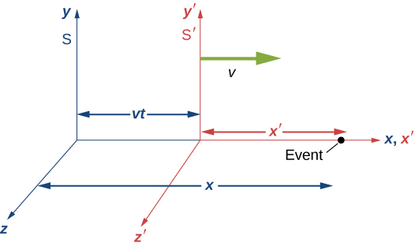
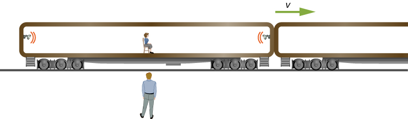
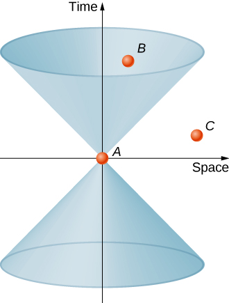
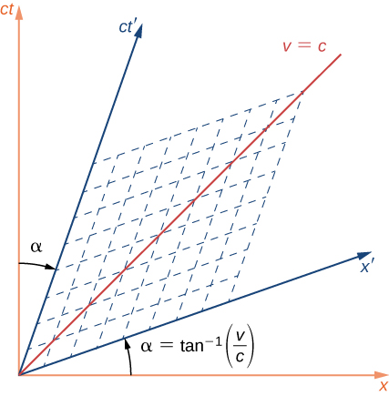

Describe the Galilean transformation of classical mechanics, relating the position, time, velocities, and accelerations measured in different inertial frames
Derive the corresponding Lorentz transformation equations, which, in contrast to the Galilean transformation, are consistent with special relativity
Explain the Lorentz transformation and many of the features of relativity in terms of four-dimensional space-time
We have used the postulates of relativity to examine, in particular examples, how observers in different frames of reference measure different values for lengths and the time intervals. We can gain further insight into how the postulates of relativity change the Newtonian view of time and space by examining the transformation equations that give the space and time coordinates of events in one inertial reference frame in terms of those in another. We first examine how position and time coordinates transform between inertial frames according to the view in Newtonian physics. Then we examine how this has to be changed to agree with the postulates of relativity. Finally, we examine the resulting Lorentz transformation equations and some of their consequences in terms of four-dimensional space-time diagrams, to support the view that the consequences of special relativity result from the properties of time and space itself, rather than electromagnetism.
The Galilean Transformation Equations
An event is specified by its location and time (x, y, z, t) relative to one particular inertial frame of reference S. As an example, (x, y, z, t) could denote the position of a particle at time t, and we could be looking at these positions for many different times to follow the motion of the particle. Suppose a second frame of reference moves with velocity v with respect to the first. For simplicity, assume this relative velocity is along the x-axis. The relation between the time and coordinates in the two frames of reference is then
Implicit in these equations is the assumption that time measurements made by observers in both S and are the same. That is,
These four equations are known collectively as the Galilean transformation.
We can obtain the Galilean velocity and acceleration transformation equations by differentiating these equations with respect to time. We use u for the velocity of a particle throughout this chapter to distinguish it from v, the relative velocity of two reference frames. Note that, for the Galilean transformation, the increment of time used in differentiating to calculate the particle velocity is the same in both frames, Differentiation yields
and
We denote the velocity of the particle by u rather than v to avoid confusion with the velocity v of one frame of reference with respect to the other. Velocities in each frame differ by the velocity that one frame has as seen from the other frame. Observers in both frames of reference measure the same value of the acceleration. Because the mass is unchanged by the transformation, and distances between points are uncharged, observers in both frames see the same forces acting between objects and the same form of Newton’s second and third laws in all inertial frames. The laws of mechanics are consistent with the first postulate of relativity.
The Lorentz Transformation Equations
The Galilean transformation nevertheless violates Einstein’s postulates, because the velocity equations state that a pulse of light moving with speed c along the x-axis would travel at speed in the other inertial frame. Specifically, the spherical pulse has radius at time t in the unprimed frame, and also has radius at time in the primed frame. Expressing these relations in Cartesian coordinates gives
The left-hand sides of the two expressions can be set equal because both are zero. Because and we obtain
This cannot be satisfied for nonzero relative velocity v of the two frames if we assume the Galilean transformation results in with
To find the correct set of transformation equations, assume the two coordinate systems S and in [link]. First suppose that an event occurs at in and at in S, as depicted in the figure.
An event occurs at (x, 0, 0, t) in S and at in The Lorentz transformation equations relate events in the two systems.

Suppose that at the instant that the origins of the coordinate systems in S and coincide, a flash bulb emits a spherically spreading pulse of light starting from the origin. At time t, an observer in S finds the origin of to be at With the help of a friend in , the S observer also measures the distance from the event to the origin of and finds it to be This follows because we have already shown the postulates of relativity to imply length contraction. Thus the position of the event in S is
and
The postulates of relativity imply that the equation relating distance and time of the spherical wave front:
must apply both in terms of primed and unprimed coordinates, which was shown above to lead to [link]:
We combine this with the equation relating x and to obtain the relation between t and
The equations relating the time and position of the events as seen in S are then
This set of equations, relating the position and time in the two inertial frames, is known as the Lorentz transformation. They are named in honor of H.A. Lorentz (1853–1928), who first proposed them. Interestingly, he justified the transformation on what was eventually discovered to be a fallacious hypothesis. The correct theoretical basis is Einstein’s special theory of relativity.
The reverse transformation expresses the variables in S in terms of those in Simply interchanging the primed and unprimed variables and substituting gives:
Using the Lorentz Transformation for Time
Spacecraft is at rest, eventually heading toward Alpha Centauri, when Spacecraft S passes it at relative speed c/2. The captain of sends a radio signal that lasts 1.2 s according to that ship’s clock. Use the Lorentz transformation to find the time interval of the signal measured by the communications officer of spaceship S.
Solution
Identify the known:
Identify the unknown:
Express the answer as an equation. The time signal starts as and stops at Note that the coordinate of both events is the same because the clock is at rest in Write the first Lorentz transformation equation in terms of and similarly for the primed coordinates, as:
Because the position of the clock in is fixed, and the time interval becomes:
Do the calculation.
With this gives:
Note that the Lorentz transformation reproduces the time dilation equation.
Using the Lorentz Transformation for Length
A surveyor measures a street to be long in Earth frame S. Use the Lorentz transformation to obtain an expression for its length measured from a spaceship moving by at speed 0.20c, assuming the x coordinates of the two frames coincide at time
Solution
Identify the known:
Identify the unknown:
Express the answer as an equation. The surveyor in frame S has measured the two ends of the stick simultaneously, and found them at rest at and a distance apart. The spaceship crew measures the simultaneous location of the ends of the sticks in their frame. To relate the lengths recorded by observers in and S, respectively, write the second of the four Lorentz transformation equations as:
Do the calculation. Because the length of the moving stick is equal to:
Note that the Lorentz transformation gave the length contraction equation for the street.
Lorentz Transformation and Simultaneity
The observer shown in [link] standing by the railroad tracks sees the two bulbs flash simultaneously at both ends of the 26 m long passenger car when the middle of the car passes him at a speed of c/2. Find the separation in time between when the bulbs flashed as seen by the train passenger seated in the middle of the car.
An person watching a train go by observes two bulbs flash simultaneously at opposite ends of a passenger car. There is another passenger inside of the car observing the same flashes but from a different perspective.

Solution
Identify the known:
Note that the spatial separation of the two events is between the two lamps, not the distance of the lamp to the passenger.
Identify the unknown:
Again, note that the time interval is between the flashes of the lamps, not between arrival times for reaching the passenger.
Express the answer as an equation:
Do the calculation:
Significance
The sign indicates that the event with the larger namely, the flash from the right, is seen to occur first in the frame, as found earlier for this example, so that
Space-time
Relativistic phenomena can be analyzed in terms of events in a four-dimensional space-time. When phenomena such as the twin paradox, time dilation, length contraction, and the dependence of simultaneity on relative motion are viewed in this way, they are seen to be characteristic of the nature of space and time, rather than specific aspects of electromagnetism.
In three-dimensional space, positions are specified by three coordinates on a set of Cartesian axes, and the displacement of one point from another is given by:
The distance between the points is
The distance is invariant under a rotation of axes. If a new set of Cartesian axes rotated around the origin relative to the original axes are used, each point in space will have new coordinates in terms of the new axes, but the distance given by
That has the same value that had. Something similar happens with the Lorentz transformation in space-time.
Define the separation between two events, each given by a set of x, y, z¸ and ct along a four-dimensional Cartesian system of axes in space-time, as
Also define the space-time interval between the two events as
If the two events have the same value of ct in the frame of reference considered, would correspond to the distance between points in space.
The path of a particle through space-time consists of the events (x, y, z¸ ct) specifying a location at each time of its motion. The path through space-time is called the world line of the particle. The world line of a particle that remains at rest at the same location is a straight line that is parallel to the time axis. If the particle moves at constant velocity parallel to the x-axis, its world line would be a sloped line corresponding to a simple displacement vs. time graph. If the particle accelerates, its world line is curved. The increment of s along the world line of the particle is given in differential form as
Just as the distance is invariant under rotation of the space axes, the space-time interval:
is invariant under the Lorentz transformation. This follows from the postulates of relativity, and can be seen also by substitution of the previous Lorentz transformation equations into the expression for the space-time interval:
In addition, the Lorentz transformation changes the coordinates of an event in time and space similarly to how a three-dimensional rotation changes old coordinates into new coordinates:
where
Lorentz transformations can be regarded as generalizations of spatial rotations to space-time. However, there are some differences between a three-dimensional axis rotation and a Lorentz transformation involving the time axis, because of differences in how the metric, or rule for measuring the displacements and differ. Although is invariant under spatial rotations and is invariant also under Lorentz transformation, the Lorentz transformation involving the time axis does not preserve some features, such as the axes remaining perpendicular or the length scale along each axis remaining the same.
Note that the quantity can have either sign, depending on the coordinates of the space-time events involved. For pairs of events that give it a negative sign, it is useful to define as The significance of as just defined follows by noting that in a frame of reference where the two events occur at the same location, we have and therefore (from the equation for
Therefore is the time interval in the frame of reference where both events occur at the same location. It is the same interval of proper time discussed earlier. It also follows from the relation between and that that because is Lorentz invariant, the proper time is also Lorentz invariant. All observers in all inertial frames agree on the proper time intervals between the same two events.
Check Your Understanding Show that if a time increment dt elapses for an observer who sees the particle moving with velocity v, it corresponds to a proper time particle increment for the particle of
Start with the definition of the proper time increment:
where (dx, dy, dx, cdt) are measured in the inertial frame of an observer who does not necessarily see that particle at rest. This therefore becomes
The light cone
We can deal with the difficulty of visualizing and sketching graphs in four dimensions by imagining the three spatial coordinates to be represented collectively by a horizontal axis, and the vertical axis to be the ct-axis. Starting with a particular event in space-time as the origin of the space-time graph shown, the world line of a particle that remains at rest at the initial location of the event at the origin then is the time axis. Any plane through the time axis parallel to the spatial axes contains all the events that are simultaneous with each other and with the intersection of the plane and the time axis, as seen in the rest frame of the event at the origin.
It is useful to picture a light cone on the graph, formed by the world lines of all light beams passing through the origin event A, as shown in [link]. The light cone, according to the postulates of relativity, has sides at an angle of if the time axis is measured in units of ct, and, according to the postulates of relativity, the light cone remains the same in all inertial frames. Because the event A is arbitrary, every point in the space-time diagram has a light cone associated with it.
The light cone consists of all the world lines followed by light from the event A at the vertex of the cone.

Consider now the world line of a particle through space-time. Any world line outside of the cone, such as one passing from A through C, would involve speeds greater than c, and would therefore not be possible. Events such as C that lie outside the light cone are said to have a space-like separation from event A. They are characterized in one dimension by:
An event like B that lies in the upper cone is reachable without exceeding the speed of light in vacuum, and is characterized in one dimension by
The event is said to have a time-like separation from A. Time-like events that fall into the upper half of the light cone occur at greater values of t than the time of the event A at the vertex and are in the future relative to A. Events that have time-like separation from A and fall in the lower half of the light cone are in the past, and can affect the event at the origin. The region outside the light cone is labeled as neither past nor future, but rather as “elsewhere.”
For any event that has a space-like separation from the event at the origin, it is possible to choose a time axis that will make the two events occur at the same time, so that the two events are simultaneous in some frame of reference. Therefore, which of the events with space-like separation comes before the other in time also depends on the frame of reference of the observer. Since space-like separations can be traversed only by exceeding the speed of light; this violation of which event can cause the other provides another argument for why particles cannot travel faster than the speed of light, as well as potential material for science fiction about time travel. Similarly for any event with time-like separation from the event at the origin, a frame of reference can be found that will make the events occur at the same location. Because the relations
and
are Lorentz invariant, whether two events are time-like and can be made to occur at the same place or space-like and can be made to occur at the same time is the same for all observers. All observers in different inertial frames of reference agree on whether two events have a time-like or space-like separation.
The twin paradox seen in space-time
The twin paradox discussed earlier involves an astronaut twin traveling at near light speed to a distant star system, and returning to Earth. Because of time dilation, the space twin is predicted to age much less than the earthbound twin. This seems paradoxical because we might have expected at first glance for the relative motion to be symmetrical and naively thought it possible to also argue that the earthbound twin should age less.
To analyze this in terms of a space-time diagram, assume that the origin of the axes used is fixed in Earth. The world line of the earthbound twin is then along the time axis.
The world line of the astronaut twin, who travels to the distant star and then returns, must deviate from a straight line path in order to allow a return trip. As seen in [link], the circumstances of the two twins are not at all symmetrical. Their paths in space-time are of manifestly different length. Specifically, the world line of the earthbound twin has length which then gives the proper time that elapses for the earthbound twin as The distance to the distant star system is The proper time that elapses for the space twin is where
This is considerably shorter than the proper time for the earthbound twin by the ratio
consistent with the time dilation formula. The twin paradox is therefore seen to be no paradox at all. The situation of the two twins is not symmetrical in the space-time diagram. The only surprise is perhaps that the seemingly longer path on the space-time diagram corresponds to the smaller proper time interval, because of how and depend on and
The space twin and the earthbound twin, in the twin paradox example, follow world lines of different length through space-time.
Lorentz transformations in space-time
We have already noted how the Lorentz transformation leaves
unchanged and corresponds to a rotation of axes in the four-dimensional space-time. If the S and frames are in relative motion along their shared x-direction the space and time axes of are rotated by an angle as seen from S, in the way shown in shown in [link], where:
This differs from a rotation in the usual three-dimension sense, insofar as the two space-time axes rotate toward each other symmetrically in a scissors-like way, as shown. The rotation of the time and space axes are both through the same angle. The mesh of dashed lines parallel to the two axes show how coordinates of an event would be read along the primed axes. This would be done by following a line parallel to the and one parallel to the -axis, as shown by the dashed lines. The length scale of both axes are changed by:
The line labeled at to the x-axis corresponds to the edge of the light cone, and is unaffected by the Lorentz transformation, in accordance with the second postulate of relativity. The line, and the light cone it represents, are the same for both the S and frame of reference.
The Lorentz transformation results in new space and time axes rotated in a scissors-like way with respect to the original axes.

Simultaneity
Simultaneity of events at separated locations depends on the frame of reference used to describe them, as given by the scissors-like “rotation” to new time and space coordinates as described. If two events have the same t values in the unprimed frame of reference, they need not have the same values measured along the and would then not be simultaneous in the primed frame.
As a specific example, consider the near-light-speed train in which flash lamps at the two ends of the car have flashed simultaneously in the frame of reference of an observer on the ground. The space-time graph is shown [link]. The flashes of the two lamps are represented by the dots labeled “Left flash lamp” and “Right flash lamp” that lie on the light cone in the past. The world line of both pulses travel along the edge of the light cone to arrive at the observer on the ground simultaneously. Their arrival is the event at the origin. They therefore had to be emitted simultaneously in the unprimed frame, as represented by the point labeled as t(both). But time is measured along the in the frame of reference of the observer seated in the middle of the train car. So in her frame of reference, the emission event of the bulbs labeled as (left) and (right) were not simultaneous.
The train example revisited. The flashes occur at the same time t(both) along the time axis of the ground observer, but at different times, along the time axis of the passenger.
In terms of the space-time diagram, the two observers are merely using different time axes for the same events because they are in different inertial frames, and the conclusions of both observers are equally valid. As the analysis in terms of the space-time diagrams further suggests, the property of how simultaneity of events depends on the frame of reference results from the properties of space and time itself, rather than from anything specifically about electromagnetism.
Summary
The Galilean transformation equations describe how, in classical nonrelativistic mechanics, the position, velocity, and accelerations measured in one frame appear in another. Lengths remain unchanged and a single universal time scale is assumed to apply to all inertial frames.
Newton’s laws of mechanics obey the principle of having the same form in all inertial frames under a Galilean transformation, given by
The concept that times and distances are the same in all inertial frames in the Galilean transformation, however, is inconsistent with the postulates of special relativity.
The relativistically correct Lorentz transformation equations are
We can obtain these equations by requiring an expanding spherical light signal to have the same shape and speed of growth, c, in both reference frames.
Relativistic phenomena can be explained in terms of the geometrical properties of four-dimensional space-time, in which Lorentz transformations correspond to rotations of axes.
The Lorentz transformation corresponds to a space-time axis rotation, similar in some ways to a rotation of space axes, but in which the invariant spatial separation is given by rather than distances and that the Lorentz transformation involving the time axis does not preserve perpendicularity of axes or the scales along the axes.
The analysis of relativistic phenomena in terms of space-time diagrams supports the conclusion that these phenomena result from properties of space and time itself, rather than from the laws of electromagnetism.
Problems
Describe the following physical occurrences as events, that is, in the form (x, y, z, t): (a) A postman rings a doorbell of a house precisely at noon. (b) At the same time as the doorbell is rung, a slice of bread pops out of a toaster that is located 10 m from the door in the east direction from the door. (c) Ten seconds later, an airplane arrives at the airport, which is 10 km from the door in the east direction and 2 km to the south.
Describe what happens to the angle and therefore to the transformed axes in [link], as the relative velocity v of the S and frames of reference approaches c.
The angle α approaches and the and rotate toward the edge of the light cone.
Describe the shape of the world line on a space-time diagram of (a) an object that remains at rest at a specific position along the x-axis; (b) an object that moves at constant velocity u in the x-direction; (c) an object that begins at rest and accelerates at a constant rate of in the positive x-direction.
A man standing still at a train station watches two boys throwing a baseball in a moving train. Suppose the train is moving east with a constant speed of 20 m/s and one of the boys throws the ball with a speed of 5 m/s with respect to himself toward the other boy, who is 5 m west from him. What is the velocity of the ball as observed by the man on the station?
15 m/s east
When observed from the sun at a particular instant, Earth and Mars appear to move in opposite directions with speeds 108,000 km/h and 86,871 km/h, respectively. What is the speed of Mars at this instant when observed from Earth?
A man is running on a straight road perpendicular to a train track and away from the track at a speed of 12 m/s. The train is moving with a speed of 30 m/s with respect to the track. What is the speed of the man with respect to a passenger sitting at rest in the train?
32 m/s
A man is running on a straight road that makes with the train track. The man is running in the direction on the road that is away from the track at a speed of 12 m/s. The train is moving with a speed of 30 m/s with respect to the track. What is the speed of the man with respect to a passenger sitting at rest in the train?
In a frame at rest with respect to the billiard table, a billiard ball of mass m moving with speed v strikes another billiard ball of mass m at rest. The first ball comes to rest after the collision while the second ball takes off with speed v in the original direction of the motion of the first ball. This shows that momentum is conserved in this frame. (a) Now, describe the same collision from the perspective of a frame that is moving with speed v in the direction of the motion of the first ball. (b) Is the momentum conserved in this frame?
a. The second ball approaches with velocity −v and comes to rest while the other ball continues with velocity −v; b. This conserves momentum.
In a frame at rest with respect to the billiard table, two billiard balls of same mass m are moving toward each other with the same speed v. After the collision, the two balls come to rest. (a) Show that momentum is conserved in this frame. (b) Now, describe the same collision from the perspective of a frame that is moving with speed v in the direction of the motion of the first ball. (c) Is the momentum conserved in this frame?
In a frame S, two events are observed: event 1: a pion is created at rest at the origin and event 2: the pion disintegrates after time . Another observer in a frame is moving in the positive direction along the positive x-axis with a constant speed v and observes the same two events in his frame. The origins of the two frames coincide at (a) Find the positions and timings of these two events in the frame (a) according to the Galilean transformation, and (b) according to the Lorentz transformation.
a. b.
Glossary
event
occurrence in space and time specified by its position and time coordinates (x, y, z, t) measured relative to a frame of reference
Galilean transformation
relation between position and time coordinates of the same events as seen in different reference frames, according to classical mechanics
Lorentz transformation
relation between position and time coordinates of the same events as seen in different reference frames, according to the special theory of relativity
![The space time diagram has x on the horizontal axis and c t on the vertical axis. The light cone appears as 45 degree lines coming out of the origin. The earth twin world line is a vertical line on the c t axis. The first part of the space twin world line is a line leaving the origin at an angle larger than 45 degrees but less than 90 degrees. At a point that is a vertical distance c delta t and a horizontal distance delta x from the origin, the world line of the space twin bends back toward the c t axis and hits the c t axis a vertical distance c delta t from where it changed direction.](CNX_UPhysics_38_05_SpaceTwins.jpg)
![The ground observer and the train, moving to the right at velocity v and with flash lamps at either end and a passenger in the center, are shown below a space time graph of the example. The horizontal and vertical axes of the space time diagram are the x and c t axes. The passenger is at x=0. The flashes are equidistant to the left and right of x=0 and are shown at the same time, t<0. Light lines from each flash pass through the origin at 45 degrees and are labeled as v=c. The event t (both) is labeled where the horizontal line connecting the left and right flash events crosses the c t axis. The x prime axis is between the + 45 degree light line and the x axis. The c t prime axis is between the +45 degree light line and the vertical c t axis. A dashed line that is parallel to the x prime axis and passes through the left flash event is shown. The point where it crosses the c t prime axis is labeled as t prime (left). Another dashed line that is parallel to the x prime axis and passes through the right flash event is shown. The point where this second dashed line crosses the c t prime axis is labeled as t prime (right). The t prime (right) point is lower on the c t prime axis than the t prime (left) point.](CNX_UPhysics_38_05_STtrain.jpg)